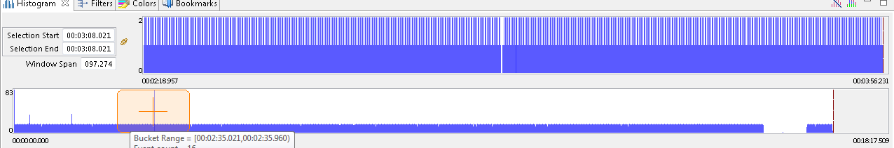

Histogram View
The Histogram View displays the trace events (counters data) distribution with respect to time. When performance analysis is running, this view is dynamically updated as the events are received.

The controls on the view are described in the table below.
| Control | Description |
|---|---|
| Selection Start | Displays the start time of the current selection |
| Selection End | Displays the end time of the current selection |
| Window Span | Displays the current zoom window size in seconds |
The controls can be used to modify their respective value. After validation, the other controls and views will be synchronized and updated accordingly. To modify both selection times simultaneously, press the link icon which disables the Selection End control input.
The large (full) histogram, at the bottom, shows the event distribution over the trace. It also has a smaller semi-transparent orange window, with a cross-hair, that shows the current zoom window.
The smaller (zoom) histogram, on top right, corresponds to the current zoom window, a sub-range of the event set.
The x-axis of each histogram corresponds to the event timestamps. The start time and end time of the histogram range is displayed. The y-axis shows the maximum number of events in the corresponding histogram bars.
The vertical blue line(s) show the current selection time (or range). If applicable, the region in the selection range will be shaded.
The table below lists the mouse actions that can be used to control the histogram.
| Mouse Action | Action Performed |
|---|---|
| Left-click | Sets a selection time |
| Left-drag | Sets a selection range |
| Shift+Left-click or drag | Extend or shrink the selection range |
| Middle-click or CTRL+Left-click | Centers the zoom window |
| Middle-drag or CTRL+left-drag | Moves the zoom window |
| Right-drag | Sets the zoom window |
| SHIFT+Right-click or drag | Extend or shrink the zoom window |
| Mouse wheel up | Zoom in |
| Mouse wheel dowm | Zoom out |
Hovering the mouse over an histogram bar pops up an information window that displays the start/end time of the corresponding bar, as well as the number of events it represents. If the mouse is over the selection range, the selection span in seconds is displayed.
The table below lists the keys and the action performed when they are used in the Histogram view.
| Key | Action Performed |
|---|---|
| Left Arrow | Moves the current event to the previous non-empty bar. |
| Right Arrow | Moves the current event to the next non-empty bar. |
| Home | Sets the current time to the first non-empty bar. |
| End | Sets the current time to the last non-empty histogram bar. |
| Plus (+) | Zoom in |
| Minus (-) | Zoom out |